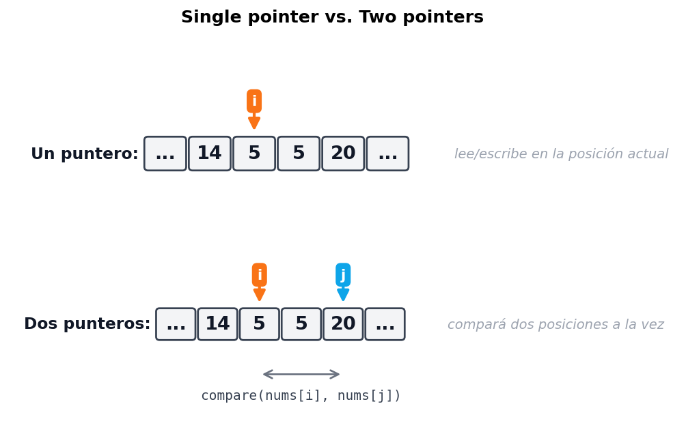
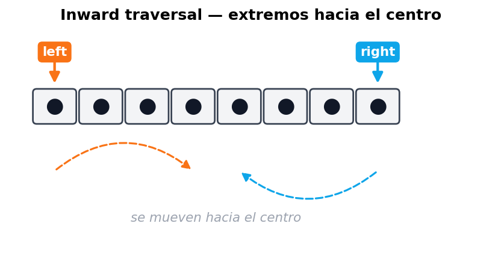
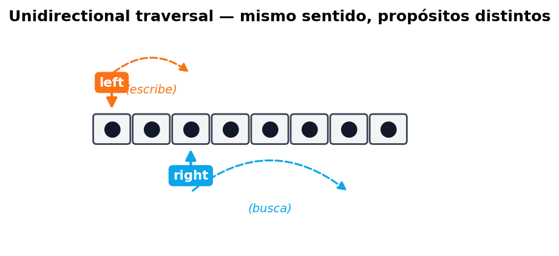
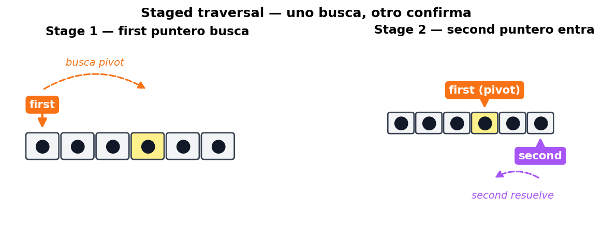
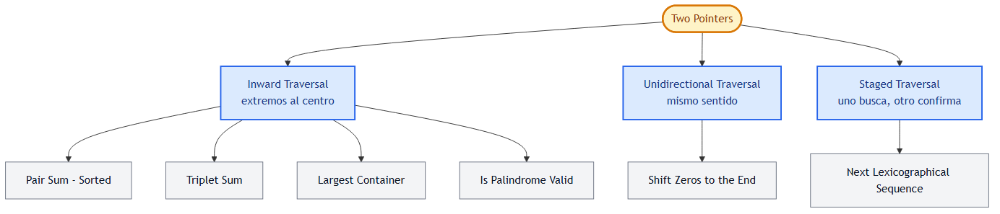

Introduction to Two Pointers
📍 Cap. 1 / Book III — Two Pointers · Capítulo raíz · Primer problema: Pair Sum ➡ · 📚 KB Index
TL;DR — Two Pointers reemplaza un doble for-loop O(n²) por dos índices que se mueven a lo largo de una estructura lineal en O(n). Funciona cuando el input tiene dinámica predecible (sorted array, palíndromo simétrico, posiciones complementarias) y la pregunta es del tipo “encontrar un par/triplete” o “reordenar in-place”.
📑 In this chapter¶
- 🎓 For Dummies — empezá por acá
- Qué es un “puntero” en este contexto
- Por qué dos punteros vencen al doble for-loop
- Las tres estrategias canónicas
- Inward traversal
- Unidirectional traversal
- Staged traversal
- Cuándo usar Two Pointers
- Ejemplo del mundo real: garbage collection
- Mapa del capítulo
- ⭐ Amplification: decision matrix
- ⚠️ Pitfalls comunes
- References
🧭 Navegación rápida — los 6 problemas¶
| # | Problema | Strategy | Difficulty |
|---|---|---|---|
| 1 | Pair Sum — Sorted | Inward | 🟢 Easy |
| 2 | Triplet Sum (3Sum) | Inward + outer loop | 🟡 Medium |
| 3 | Largest Container | Inward | 🟡 Medium |
| 4 | Is Palindrome Valid | Inward | 🟢 Easy |
| 5 | Shift Zeros to the End | Unidirectional | 🟢 Easy |
| 6 | Next Lexicographical Sequence | Staged | 🟡 Medium |
🎓 For Dummies — empezá por acá¶
Imaginate que tenés una fila ordenada de gente con un cartel con la edad. Te piden encontrar dos personas cuya edad sume 50.
Brute force (cómo lo haría alguien sin pensar): agarrás a cada persona, y para esa persona vas a comparar contra todas las demás. Si hay 100 personas, eso son 100 × 100 = 10.000 comparaciones. O sea, te morís de aburrimiento.
Two pointers (la posta): poneé un dedo al inicio (la persona más joven) y otro al final (la más vieja). Sumá las dos edades:
- ¿La suma da menos que 50? → necesitás más edad → movés el dedo de la izquierda una posición a la derecha (a alguien más viejo).
- ¿La suma da más que 50? → te pasaste → movés el dedo de la derecha una posición a la izquierda (a alguien más joven).
- ¿Da exactamente 50? → bingo, encontraste el par.
En una sola pasada (≈100 movimientos en vez de 10.000) terminaste. Eso es two pointers: convertís O(n²) en O(n) aprovechando que el input está ordenado (la “dinámica predecible”).
La idea en una analogía aún más cotidiana¶
Pensalo como una balanza de farmacia antigua:
- A la izquierda ponés la cabeza de la fila (los livianos).
- A la derecha la cola de la fila (los pesados).
- Si la balanza marca menos de lo que querés, sacás un liviano y ponés uno un poco más pesado (mover left).
- Si marca de más, sacás un pesado y ponés uno un poco más liviano (mover right).
- Si marca justo, listo.
Cada movimiento te acerca a la respuesta de forma garantizada. Nunca tenés que volver atrás.
Las 3 trampas más comunes¶
- ⚠️ Pensar que sirve para arrays sin orden. Si el array no es sorted (o no tiene otra dinámica predecible como simetría), mover el puntero no te garantiza acercarte a la respuesta. Two pointers no es magia: necesita un input con estructura.
- ⚠️ Olvidarse de la condición de salida. Casi siempre es
while left < right. Si usás<=, comparás un elemento contra sí mismo (y eso a veces rompe la lógica, ej: pair-sum donde no podés usar el mismo índice dos veces). - ⚠️ Mover los dos punteros cuando solo deberías mover uno. En problemas como pair-sum solo se mueve uno por iteración (decidido por la comparación). Si los movés a los dos siempre, te saltás respuestas válidas.
¿Listo para la versión completa? ⬇️
Qué es un “puntero” en este contexto¶
Un puntero acá no es un puntero de C/C++. Es simplemente una variable que guarda un índice o posición dentro de una estructura lineal (array, string, linked list).
Con un solo puntero podés hacer una pasada simple y leer/escribir en esa posición. Con dos, desbloqueás la capacidad de comparar dos elementos al mismo tiempo sin tener que rebobinar:

Por qué dos punteros vencen al doble for-loop¶
La forma “naive” de comparar todas las parejas es:
for (let i = 0; i < n; i++) {
for (let j = i + 1; j < n; j++) {
compare(nums[i], nums[j]);
}
}
Esto cuesta O(n²) porque revisa cada par. El problema: no aprovecha información que el input pueda tener.
Two pointers explota una dinámica predecible en el input. El ejemplo más típico es un sorted array: si movés un puntero a la derecha, garantizás que el valor en la nueva posición es mayor o igual que el anterior. Esa garantía es lo que te permite descartar combinaciones enteras sin probarlas.
Regla de oro: si podés explicar por qué mover el puntero descarta un subconjunto entero de respuestas posibles, two pointers va a funcionar. Si no podés, probablemente necesites otro pattern (hash map, sliding window, DP).
Las tres estrategias canónicas¶
Inward traversal (extremos hacia el centro)¶
Los punteros arrancan en los extremos opuestos y se mueven hacia adentro.

Cuándo usarla: problemas donde necesitás comparar elementos de extremos opuestos:
- Pair Sum - Sorted (sumar puntas).
- Is Palindrome Valid (comparar simetría).
- Largest Container (área entre dos columnas).
- Triplet Sum (después de fijar
a, busca par con inward).
Decisión típica: según la comparación entre nums[left] y nums[right], movés left++, right--, o ambos.
Unidirectional traversal (mismo sentido)¶
Los dos punteros arrancan en el mismo extremo y se mueven en el mismo sentido, pero a velocidades distintas o con propósitos distintos.

Cuándo usarla: problemas donde uno de los punteros busca información y el otro mantiene el estado (típicamente la próxima posición de escritura):
- Shift Zeros to the End (
rightbusca no-cero,leftmarca dónde escribir). - Remove duplicates from sorted array.
- Merge sorted arrays in-place.
Diferencia clave con sliding window: en sliding window los dos punteros forman una “ventana” que se mueve. En unidirectional two-pointer no necesariamente mantenés un rango contiguo entre ambos: podés sobrescribir.
Staged traversal (uno busca, otro confirma)¶
El primer puntero recorre el array buscando una condición. Cuando la encuentra, el segundo puntero entra en escena y hace una operación adicional.

Cuándo usarla: problemas en dos fases, donde la segunda fase depende de algo que descubrió la primera:
- Next Lexicographical Sequence (primero buscar el pivot, luego buscar el rightmost successor).
- Algunas variantes de partitioning.
Cuándo usar Two Pointers¶
Indicadores fuertes de que el problema admite two pointers:
| Indicador | Por qué |
|---|---|
| Input es lineal (array, string, linked list) | Two pointers necesita una estructura recorrible por índice. |
| Input está sorted o tiene simetría (palíndromo) | La dinámica predecible te permite descartar pares al moverte. |
| Te piden un par / triplete / k-tupla que cumple una condición | Naturalmente mapea a “fijar uno, buscar el otro con dos punteros”. |
| Te piden modificar el array in-place (mover, eliminar, particionar) | Unidirectional two-pointer suele resolverlo sin memoria extra. |
| El brute force es O(n²) y necesitás O(n) o O(n log n) | Two pointers es la herramienta canónica de reducción. |
Si ninguno de estos aplica, probablemente two pointers no es el pattern. Mirá si encaja hash map (búsqueda O(1)), sliding window (subarray contiguo con condición), o binary search (búsqueda en sorted con descarte logarítmico).
Ejemplo del mundo real: garbage collection¶
En memory compaction (parte clave del garbage collection), el goal es liberar memoria contigua eliminando los huecos que dejan los objetos muertos.
Two pointers lo resuelve elegantemente:
Heap antes de compactar (O = vivo, X = muerto):
[ O X O X X O O X O ]
Dos punteros:
- free → próxima posición libre donde escribir
- scan → recorre el heap buscando objetos vivos
Heap después:
[ O O O O O _ _ _ _ ]
▲
free apunta acá → todo lo de la derecha es libre
Es literalmente shift-zeros-to-the-end pero con objetos vivos en lugar de números no-cero. La técnica es la misma.
Otros ejemplos del mundo real:
- Database compaction (LSM trees, RocksDB) — mismo patrón aplicado a SSTables.
- Buffer compaction en networking (TCP receive buffer reordering).
- String trimming / deduplication in-place en parsers.
Mapa del capítulo¶

| # | Problema | Estrategia | Dificultad | Link |
|---|---|---|---|---|
| 1 | Pair Sum - Sorted | Inward | 🟢 Easy | pair-sum-sorted.md |
| 2 | Triplet Sum | Inward + outer loop | 🟡 Medium | triplet-sum.md |
| 3 | Largest Container | Inward | 🟡 Medium | largest-container.md |
| 4 | Is Palindrome Valid | Inward | 🟢 Easy | is-palindrome-valid.md |
| 5 | Shift Zeros to the End | Unidirectional | 🟢 Easy | shift-zeros-to-the-end.md |
| 6 | Next Lexicographical Sequence | Staged | 🟡 Medium | next-lexicographical-sequence.md |
El pattern de two pointers es muy amplio. Variantes más especializadas se tratan en capítulos separados: - Fast and Slow Pointers (Cap. 4) — punteros que se mueven a velocidades distintas (cycle detection). - Sliding Windows (Cap. 5) — los dos punteros mantienen un rango contiguo con una condición.
⭐ Amplification: decision matrix¶
Cuando ves un problema nuevo, esta tabla te ayuda a elegir la estrategia:
| Pista en el enunciado | Estrategia probable |
|---|---|
| “sorted array” + “find pair / triplet that sums to X” | Inward — pair sum o triplet sum |
| “palindrome” / “símetrico” / “comparar punta con cola” | Inward — comparación directa |
| “área / volumen / container” entre dos elementos | Inward — largest container, trapping rain water |
| “modificar in-place” / “remove / shift / partition” | Unidirectional — un puntero lee, el otro escribe |
| “remove duplicates from sorted array” | Unidirectional clásico |
| “next permutation” / “rearrange” siguiendo una regla local | Staged — encontrar pivot y luego ajustar |
| “sort 0s, 1s, 2s in place” (Dutch flag) | Tres punteros (variante de unidirectional) |
| “find pair in unsorted array” | NO two pointers — probablemente hash map |
| “longest substring with condition” | NO two pointers clásico — sliding window |
Heurística rápida (3 preguntas)¶
- ¿El input es lineal y tiene orden o simetría? → Two pointers viable.
- ¿El brute force es O(n²) por probar todas las parejas? → Two pointers va a bajar a O(n).
- ¿Necesito modificar in-place o encontrar un par/triplete? → Two pointers casi seguro.
Si las 3 dan “sí”, apuntá a two pointers. Si la #1 da “no”, probablemente necesites otro pattern (hash map para unsorted, DP para problemas con subestructura).
⚠️ Pitfalls comunes¶
- No verificar que el array esté sorted. Pair sum necesita sorted. Si en la entrevista te dan unsorted, primero ordenás (O(n log n)) o usás hash map (O(n) pero con espacio extra). Aclaralo siempre con el entrevistador.
- Off-by-one en la condición de salida. Casi siempre
while left < right. Usar<=te hace compararnums[i]consigo mismo, lo cual rompe pair-sum (no podés usar el mismo elemento dos veces como pareja). - Mover ambos punteros cuando solo deberías mover uno. En pair-sum, si la suma es chica solo movés
left. Si movés ambos te saltás el valor correcto. - Confundir two pointers con sliding window. La diferencia: en sliding window los punteros mantienen un rango contiguo que representa una “ventana” del input; en two pointers los punteros pueden estar lejos y no representan una ventana, sino dos posiciones independientes que comparás.
- Olvidar dedup en problemas con duplicados. Triplet sum requiere skip explícito de valores repetidos para evitar triplets duplicados en la salida.
- No considerar arrays vacíos / de 1 elemento. Always test:
[],[x],[x, x]antes de submitter.
References¶
- Coding Interview Patterns — Capítulo “Two Pointers”
- LeetCode tag two-pointers
- Capítulos relacionados:
- Fast and Slow Pointers — variante con velocidades distintas
- Sliding Windows — variante con rango contiguo
📍 Cap. 1 / Book III — Two Pointers · Primer problema: Pair Sum ➡ · 📚 KB Index